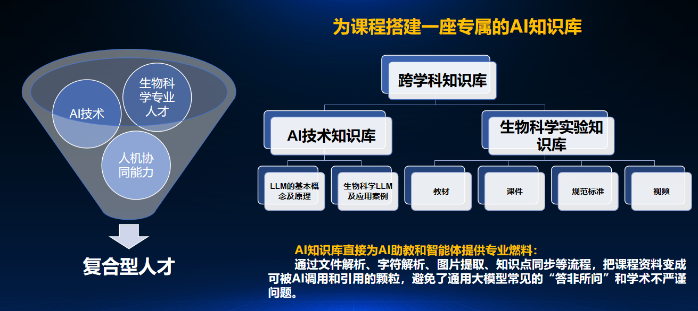
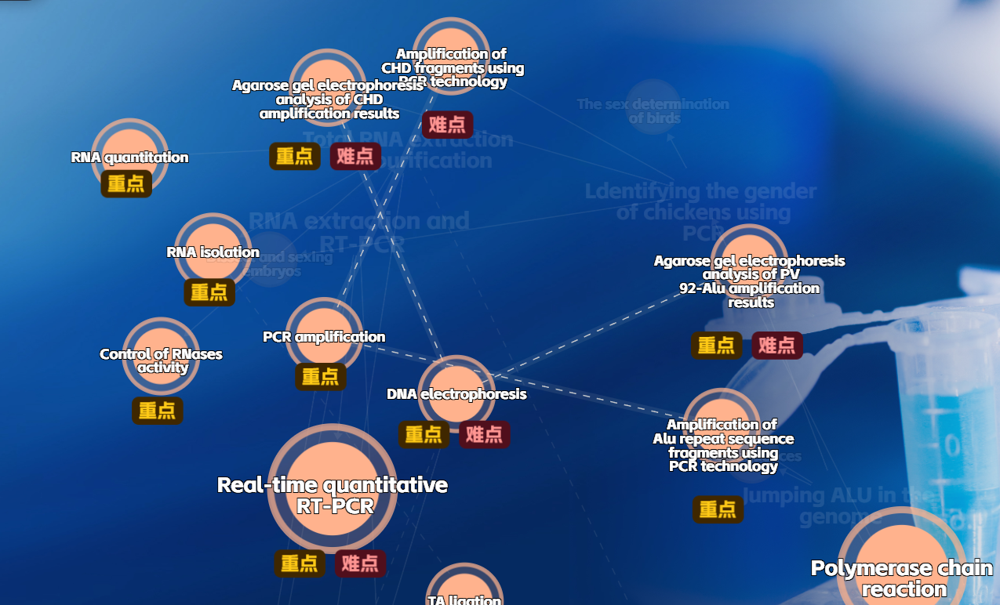
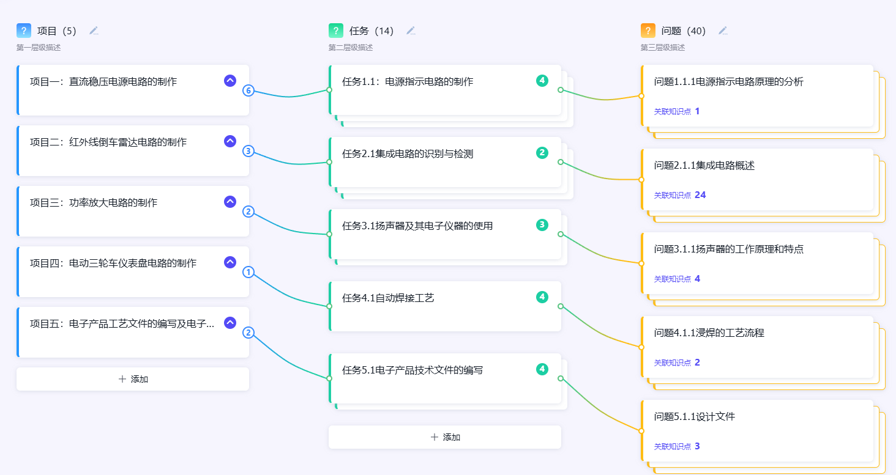
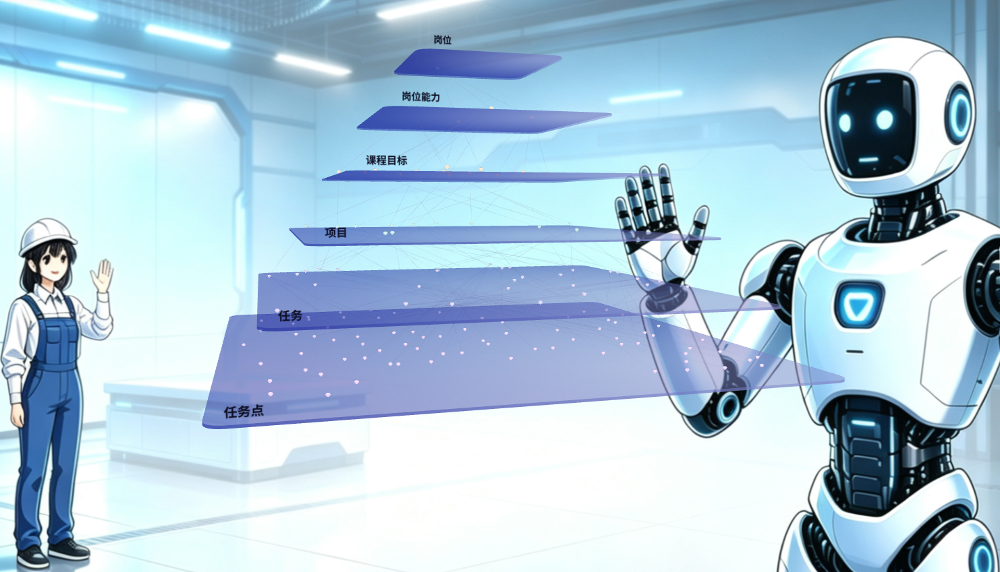
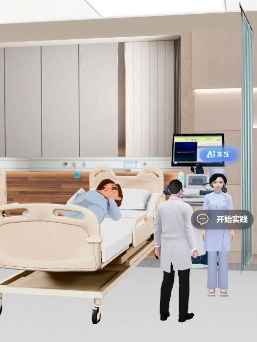
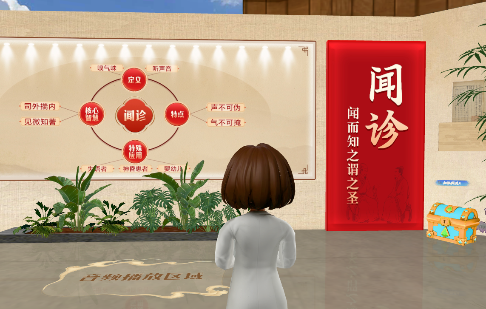
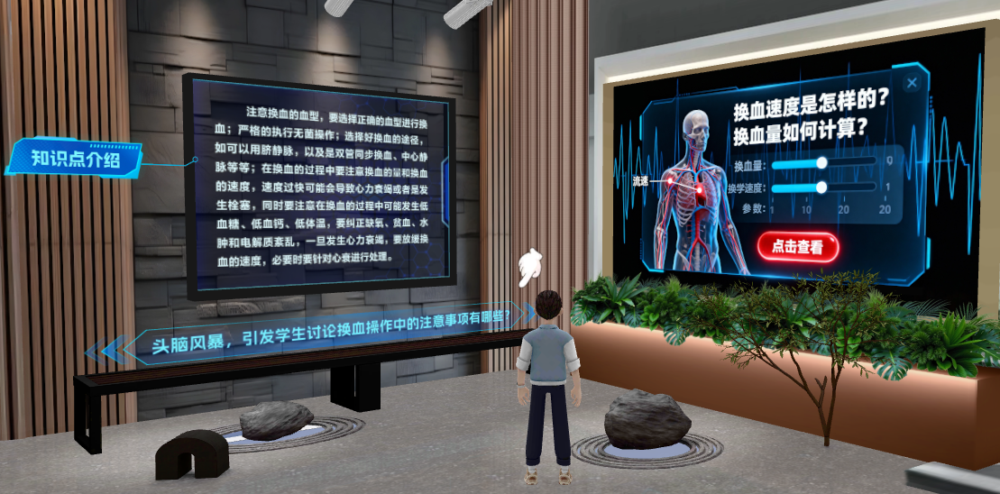
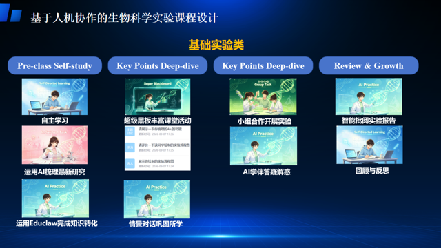
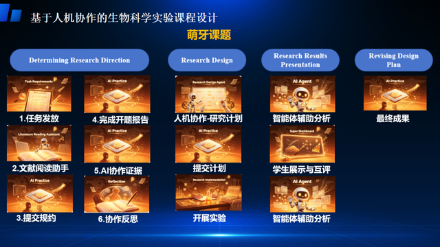

三项诊断分别指向内容资产、协作分工与评价闭环三处缺口，构成后续建设的出发点。
知识资源与图谱尚未结构化建设。
AI 仅零散介入个别环节，未形成覆盖全流程的协作分工。
尚未形成"教学评"闭环，评价结果难以反哺内容与教学策略。
先定三方定位与协作机制，再把 AI 拆成按实验阶段分化的角色：可用 14 个，明确禁止 3 个。角色不同，权限就不同。
目标设定、内容审核、线下指导
按实验前、中、后扮演不同角色
完成任务、质疑反思、成果产出
全过程数据回流，驱动教学改进
| 角色 | 定位 | 主要职责 |
|---|---|---|
| 教师 | 设计与把关 | 目标设定、内容审核、最终评价 |
| AI | 按阶段分化 | 前 5 个、中 3 个、后 6 个角色 |
| 学生 | 学习与责任主体 | 完成任务、质疑反思、署名担责 |
同一学期内的三大板块：基础实验 → 综合实验 → 毕设前准备。横轴为任务进程（三阶六环），纵轴为素养层级 L1→L4，深度轴为 AI 介入档位。板块越往后，许可上限越高，素养要求也越高。
分层推进：知识库与图谱打基座，展厅与任务引擎筑核心，Agent 提供智能服务，数据闭环持续优化评价。
把《生物科学综合实验》建设为内容资产完备、智能支持全程、数据闭环驱动的人机协作实验课程新样态。
先把课程内容变成可信、可用、可被 AI 调用的资产
让资源可展示、学习有任务、过程留数据
覆盖课前、课中、课后全流程的协同支持
全粒度学情留存，反哺内容与教学策略
全粒度学情留存，优化评价体系，反哺内容与教学策略
课程专属 AI 助教 24h 在线；操作视频 / 报告 AI 初评上线
多模态资源体系 + 学生成果常设展，移动端可访问
萌芽课题全周期线上管理
按模块搭建知识库，增加多模态资源
知识、能力、实验、个性化图谱节点上线
从课程能力培养目标出发反推知识库建设：要培养什么能力，就沉淀什么内容。
文件解析、字符解析、图片提取
形成可被 AI 调用、可溯源的知识颗粒
逐条把关权威性与表述准确性
随教学反馈与高频问题持续补充

| 图谱类型 | 建设建议 | 适配内容 |
|---|---|---|
| 知识图谱 | 建议完善 | 已梳理一版；建议升级为「AI 技术在生物科学实验中的应用 + 本课程专业知识」双知识体系 |
| 能力图谱 | 建议做 | 回答"这门课培养哪些能力"：「生物科学实验能力 + 人机协作能力」双轨并行 |
| 实验图谱 | 建议做 | 重要实验按「实验要求 + 实验步骤 + 知识点」连成图谱 |
| 个性化图谱 | 可建设 | 基于学习行为与掌握数据，生成个人学习路径与学情画像，支撑因材施教 |






以任务为学习的基本驱动力：引擎生成、推送不同层次与类型的任务，衔接知识库、图谱与评价。


分工明确的多个 Agent 陪伴课前预习、课中实验、课后复盘全程，启发学生思考，支持自主探究。
平台学情数据全粒度留存：小到一个知识点，大到整门课程，随处可查。